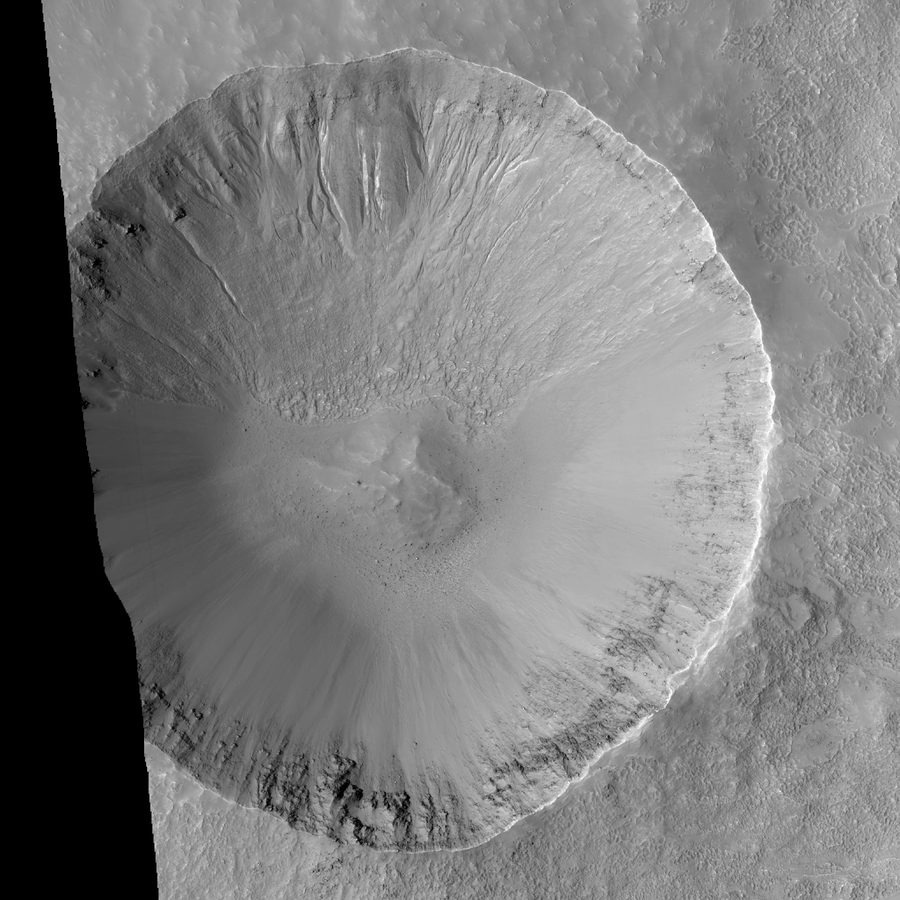
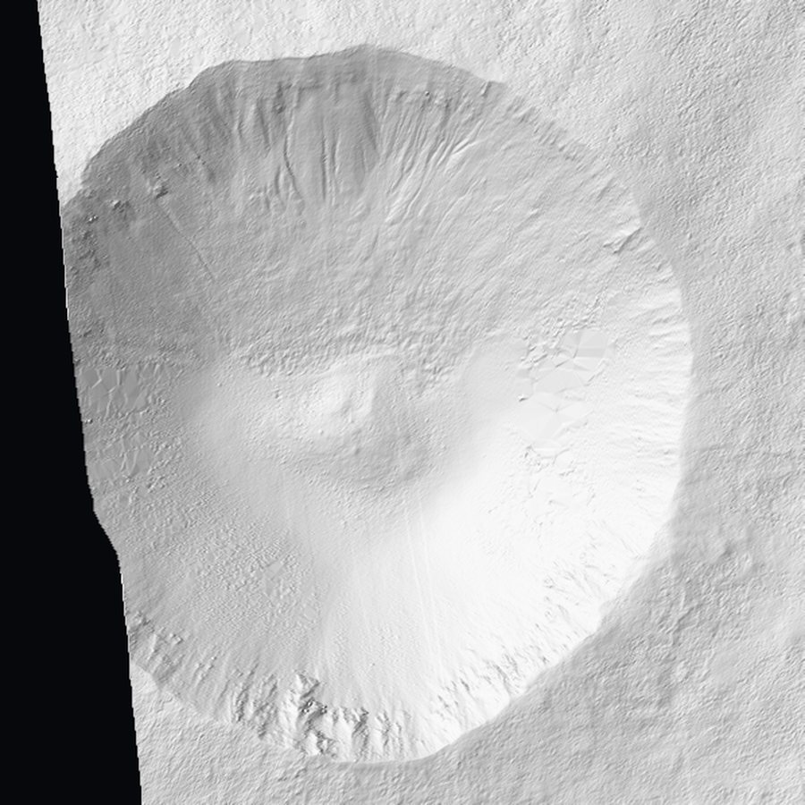
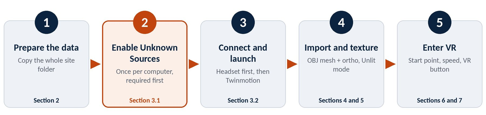

Contents
- Document
- HiRISE in VR: technical guide
- Author
- Raymundo "R@y" Olguin, HiROC and SIC, LPL, University of Arizona
- Software
- HiRISE 3D Topographic Reconstruction Pipeline v6.3.9; Twinmotion 2025.2
- Data
- HiRISE stereo DTMs and RED orthoimages, NASA/JPL/University of Arizona (PDS)
- Revised
- 19 November 2026
Chapters
- 1OverviewOne DTM, four views: elevation, mesh, orthoimage, unlit
- 2Running the pipelineRUN.bat: five questions, two menus, the console
- 3Orthoimage selectionGround error E, emission angle, binning
- 4Output filesThe site folder and the OBJ, MTL, JPG chain
- 5VR in TwinmotionImport, Unlit view, speeds, headset
- 6Results: all 40 DTMs3D windows, Mars map, region filter
- 7ReferencesPapers cited in the chapters
1Overview: from orbit to the headset
Follow one real HiRISE terrain, the Gully Monitoring DTM, through the HiRISE 3D Topographic Reconstruction Pipeline. Step through the four views and drag the terrain to orbit it. Technical terms are defined in the HiRISE glossary.
Source: Pipeline User Manual (v6.3.9), Chapter 1; HiRISE Pipeline Anatomy
- 7291 × 5172elevation posts in the full DTM
- 1 mpost spacing
- 0.25 mfinest orthoimage grid released with this DTM (A)
- 698 mof relief in this 3.6 km window
2Running the pipeline
The HiRISE 3D Topographic Reconstruction Pipeline (v6.3.9) is driven by RUN.bat, a five-question Windows wizard. Try it here: answer each question as an operator would, with the Gully Monitoring DTM, and watch the console the pipeline prints. Each parameter is explained beside the console.
Source: Pipeline User Manual (v6.3.9), Chapters 4 and 5
A simulation of the real front end: the questions, menus and console blocks follow the Pipeline User Manual. Installation, every flag and the full console reference are in the pipeline reference.
Gullies Tempe Terra
3Orthoimage selection
Several orthorectified RED images (orthoimages) cover the same DTM. Two ground errors blur the texture: the ground sample distance g, and the horizontal displacement Δz·tan e that a DTM height error Δz produces at emission angle e. The pipeline scores every candidate and keeps the sharpest.
Source: HiRISE Ortho Selection; Pipeline User Manual (v6.3.9), Chapter 8
- Horizontal displacement Δz·tan e
- Score E at 0.25 m GSD
E = √( g² + (Δz · tan e)² )
g is the ground sample distance, Δz the DTM vertical error (0.3 m for 1 m posts, matching the estimated vertical precision of tens of cm; Sutton et al. 2022). Smallest E wins; scores within 5 % go to the lower emission angle.
The two RED images of the Gully Monitoring stereo pair
Each square is one 1 m DTM post, divided into the image's native ground sample distance.
ESP_084570_1445 was acquired mostly in bin 2, so its 0.25 m grid-A orthoimage is an interpolation of 2 × 2-summed pixels and is rejected; no 0.5 m (B) orthoimage is released for it, so its best real candidate is the 1 m C orthoimage (E = 1.001 m). With the A orthoimages downloaded, ESP_066516_1445_RED_A_01_ORTHO.JP2 becomes the texture. In the run shown on this site only the two C orthoimages were in the folder, so the pipeline used ESP_066516_1445_RED_C_01_ORTHO.JP2 as a backup (E = 1.000 m): the same image wins either way.
Cavil Angusti South Polar
4Output files: inside a site folder
Every site the pipeline produces is one folder. Twinmotion only needs what is inside its MESH subfolder: the terrain mesh, its material file and the orthoimage texture.
Source: Pipeline User Manual (v6.3.9), Section 6.1; Twinmotion VR User Manual, Section 2
Read a folder name
Tap each part__
Pattern: <Region>_<Longitude>E_<Latitude>N|S, in tenths of a degree.
Inside a site folder
Try breaking the chain<id> = DTEEC_084570_1445_066516_1445_A01, the DTM product ID
- <id>/site folder
- <id>.IMGDTM, PDS format
- ESP_*_RED_C_01_ORTHO.JP2orthoimages and labels
- JP2_CONVERTED/ORTHO_SELECTION.csv
- MESH/import this folder
- <id>_Mesh01.objterrain mesh
mtllib <id>_Material_01.mtl - <id>_Material_01.mtlmaterial
map_Kd <id>_Texture01.jpg - <id>_Texture01.jpgorthoimage texture
- <id>_Mesh01.glbsame mesh, texture embedded
- <id>_TEXTURE_LINK.txtthe chain, in plain text
- <id>_Mesh01.objterrain mesh
- <id>_Material_01.mtlmoved out of MESH


North Polar Layered Deposits Bench
5VR in Twinmotion
Twinmotion 2025.2 on a Windows workstation with a discrete NVIDIA GPU, and a Meta Quest connected over Meta Horizon Link. Plan on about 10 minutes per site once the software is installed. Step through the real screens below.
Source: Twinmotion VR User Manual (Version 1.0)

Choose your speed before you click VR
Reach distant features with the teleport ray instead of a higher speed: teleporting causes no motion sickness. Requirements, import settings, controller layouts and performance tuning are in the pipeline reference.
Guilled Crater
6Results: all 40 DTMs
Every HiRISE DTM produced at HiROC by Raymundo "R@y" Olguin and released to the PDS. Pick a site on the map or in the grid: each one loads a true-scale window of the DTM, draped with its RED orthoimage and displayed unlit. Drag to orbit, pinch or scroll to zoom.
Source: HiRISE_Phone gallery; PDS labels of each DTM
Each window is a square of 256 × 256 posts cut from the valid interior of the DTM, read directly from the PDS product, with the texture from the browse version of the selected RED orthoimage (2.5 to 13.5 m per pixel). Elevations in the table are for the full DTM. HiRISE data: NASA/JPL/University of Arizona.
7References
- McEwen, A. S., et al. (2007). Mars Reconnaissance Orbiter's High Resolution Imaging Science Experiment (HiRISE). Journal of Geophysical Research: Planets, 112, E05S02. doi:10.1029/2005JE002605
- Kirk, R. L., et al. (2008). Ultrahigh resolution topographic mapping of Mars with MRO HiRISE stereo images: Meter-scale slopes of candidate Phoenix landing sites. Journal of Geophysical Research: Planets, 113, E00A24. doi:10.1029/2007JE003000
- Sutton, S. S., Chojnacki, M., McEwen, A. S., Kirk, R. L., et al. (2022). Revealing active Mars with HiRISE digital terrain models. Remote Sensing, 14(10), 2403. doi:10.3390/rs14102403
Screenshots captured by Raymundo "R@y" Olguin in Twinmotion 2025.2 on Windows.